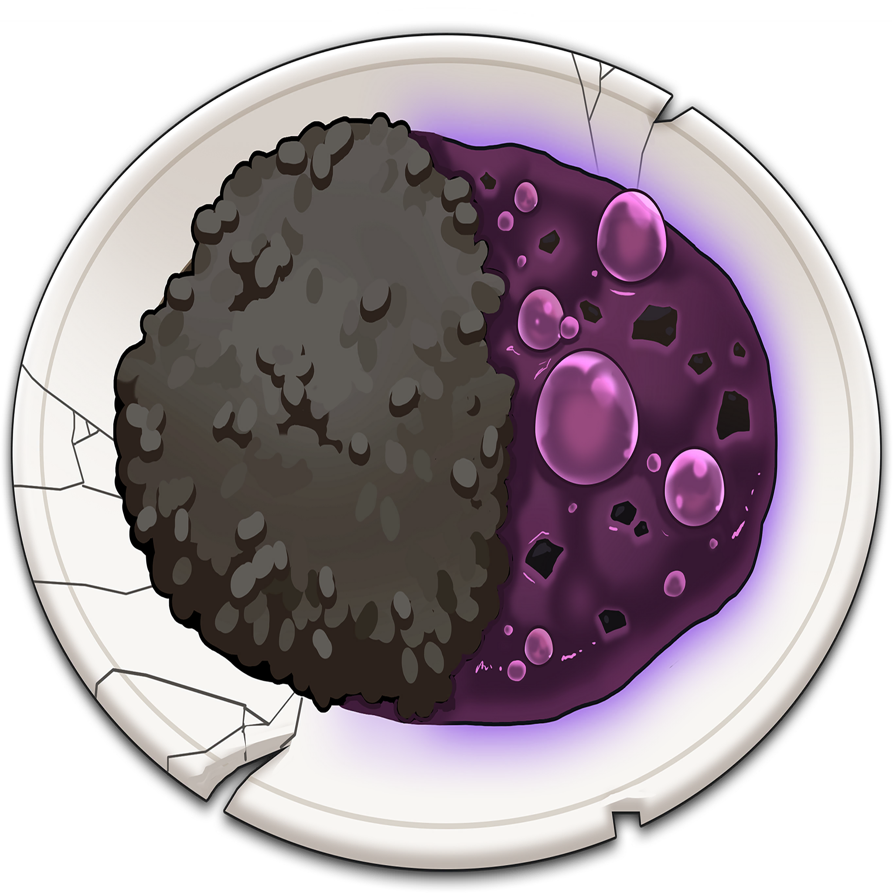
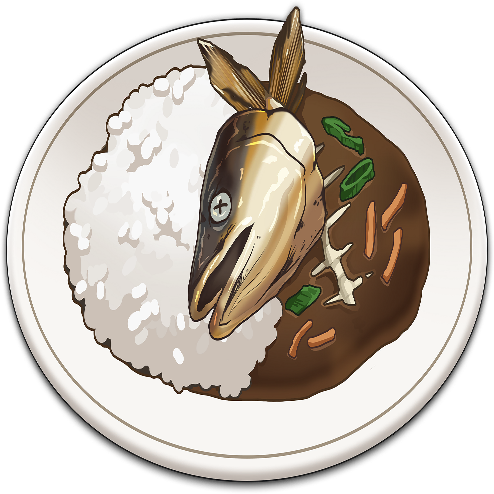
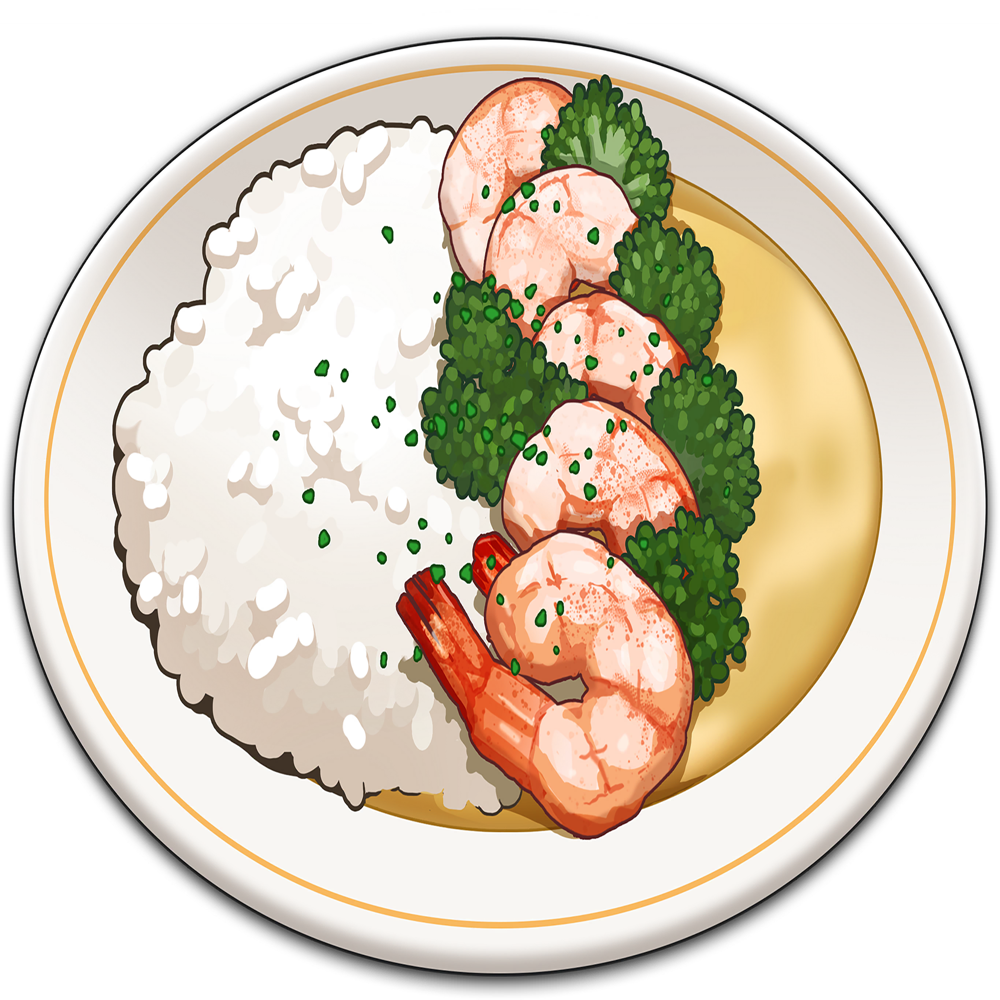
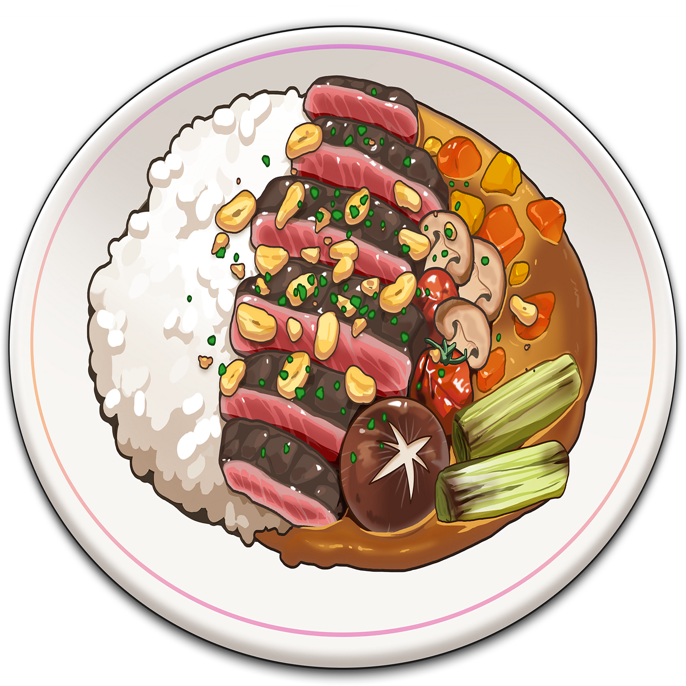

| Type | Count | Percentage | Base Probability | Expected Ligma | Credits |
|---|---|---|---|---|---|
| Sussy | 0 | 0% | 12% | 0 | 0.6 million |
| Fish | 0 | 0% | 28% | 1 | 0.4 million |
| Veggie | 0 | 0% | 35% | 1.5 | 0.4 million |
| Creamy | 0 | 0% | 20% | 2.5 | 0.2 million |
| Sirloin | 0 | 0% | 5% | 4 | 0.2 million |
| Total: | 0 | 0 | 0.0 million |
There is pity for sirloin which gradually increases its probability. For more details click here.